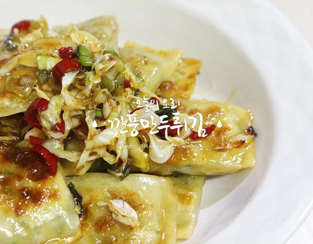
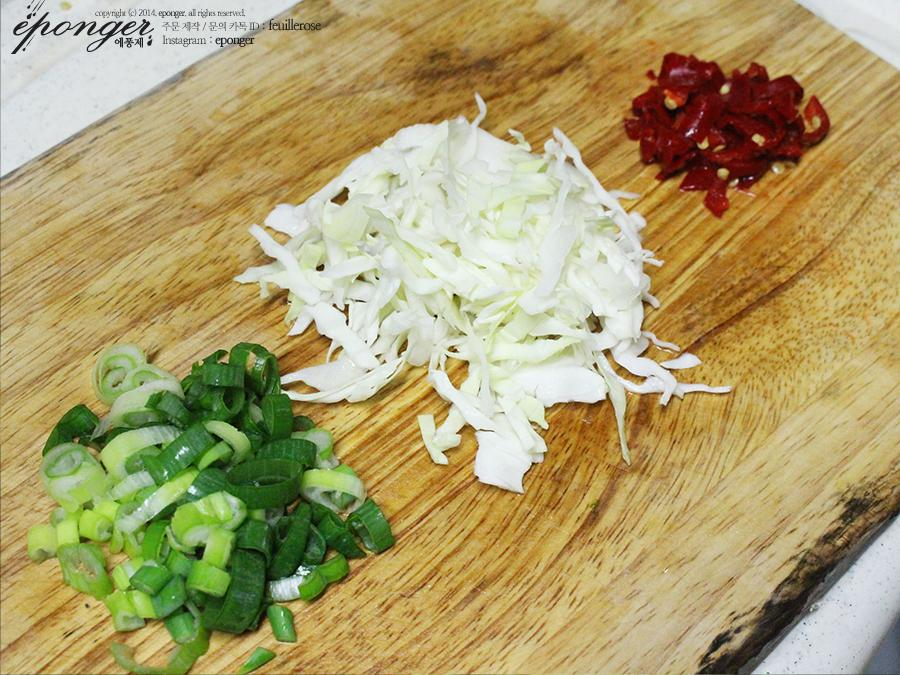
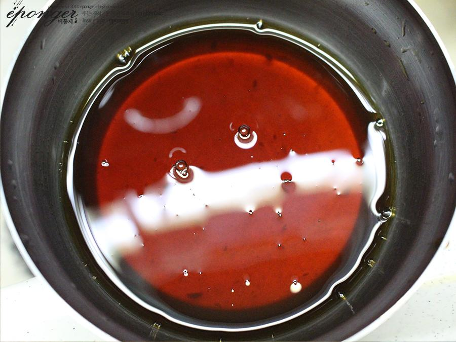
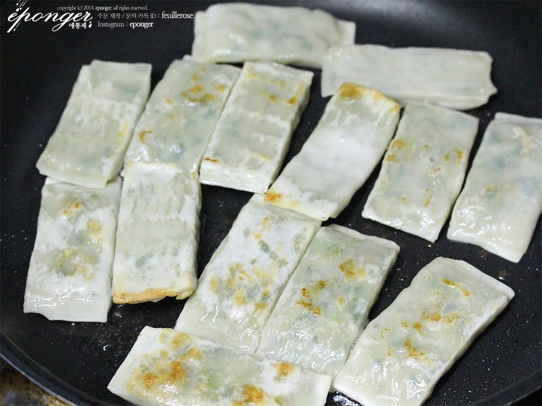
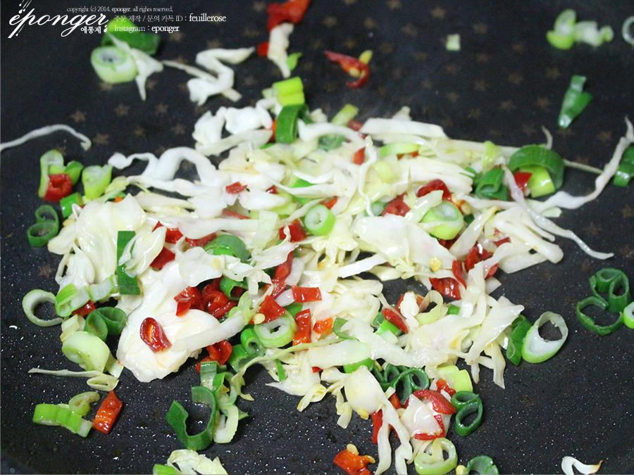
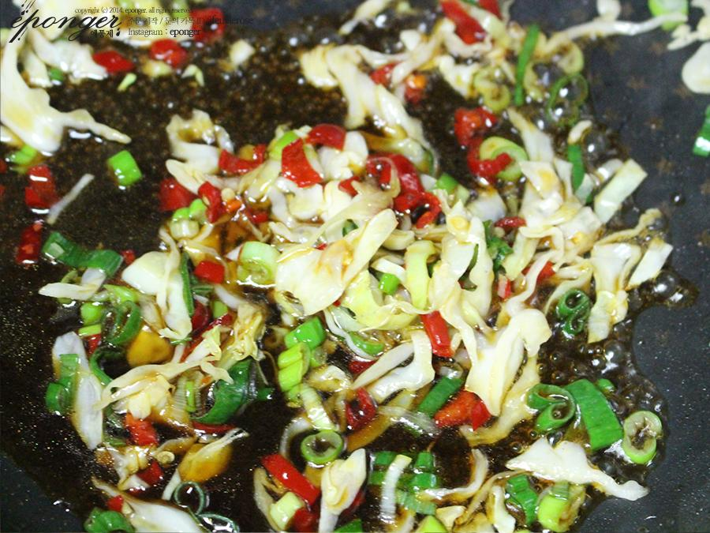
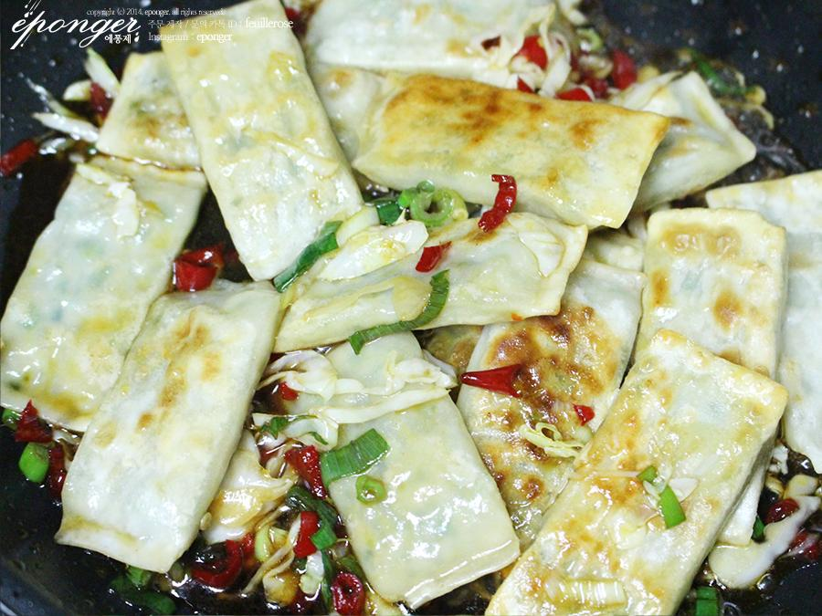

RECIPE TIP
양배추 양을 많이 해도 좋구~ 셀러드랑 같이 먹어도 너무 맛있어요~

STEP.1
파는 송송 썰어두고, 양배추는 적당히 아삭아삭한 식감을
느낄 수 있도록 썰어주세요~
홍고추는 약간 다져주세요~
홍고추는 색감을 살려주려고 넣은 거니 굳이 안 넣으셔도 됩니다~!!
집에 있는 어떠한 채소도 상관없습니다!

STEP.2
간장 2큰술, 식초 1큰술, 올리고당 3큰술, 굴소스 1큰술, 맛술 2큰술
넣고 잘 섞어주세요~

TEP.3
냉동만두는 상온이건 전자렌지이건 좀 녹여놨다가 써야
기름이 덜 튀겨요. 기름에 잘 튀겨주신다음 접시에 담아주세요~

STEP.4
그러고 준비한 채소들을 기름에 잘 볶아주세요~

STEP.5
양배추가 익었으면 소스를 붓고,
튀긴 만두를 넣고 버물러주시면 끝이랍니다!!

STEP.6
완성!!